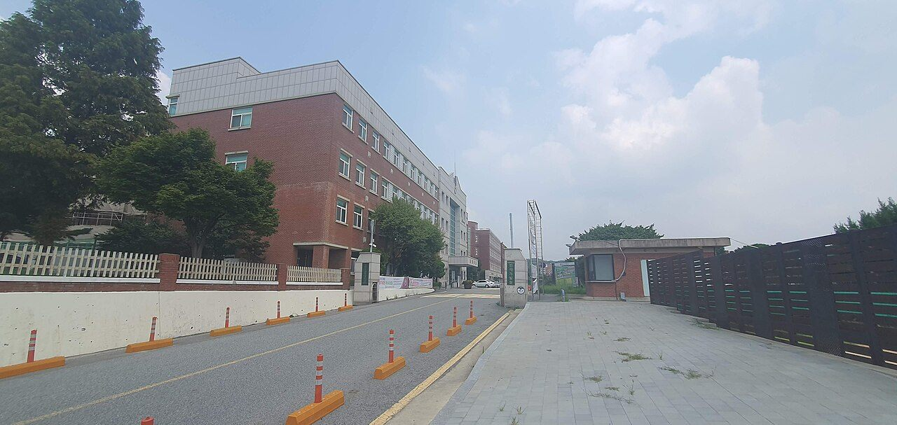

국립한국교통대학교는 충청북도 충주시에 본교를 둔 국립대학입니다. 2012년에 충주대학교와 한국철도대학이 통합해 지금의 이름이 됐습니다. 국내에서 교통 분야를 중심에 놓고 설계된 종합대학이라는 점이 이 대학의 성격을 가장 잘 설명합니다.
2027학년도 수시 원서접수는 2026년 9월 7일부터 11일까지였고 이미 마감됐습니다. 그래도 정리해 두는 이유가 있습니다. 이 대학은 캠퍼스가 세 곳이고, 캠퍼스마다 전공 계열이 아예 다릅니다. 그래서 ‘이 대학에 갈 수 있느냐’보다 ‘어느 캠퍼스 무슨 과를 볼 것이냐’를 먼저 정해야 하는 구조인데, 이런 대학은 생각보다 흔치 않습니다. 고1·고2 자녀를 두셨다면 지원 전략을 짤 때 참고가 되실 겁니다.
먼저 공개된 수치입니다.
- 평생학습자전형을 뺀 1,875명 모집에 11,797명이 지원해 평균 6.29대 1을 기록했습니다. 직전 2026학년도 6.53대 1과 비슷한 수준입니다.
- 정원 내로 좁히면 1,759명 모집에 11,076명, 6.30대 1입니다.
- 가장 큰 전형인 학생부교과 일반전형은 926명 모집에 5,412명이 지원해 5.84대 1이었습니다.
- 학생부교과 정원 내 지역인재전형에서는 융합경영학과가 23.50대 1로 가장 높았습니다.
- 학생부종합전형Ⅱ에서는 응급구조학과 19.70대 1, 자유전공학부(충주) 17.55대 1, 항공운항학과 12.50대 1 순이었습니다.
① 캠퍼스 셋이 각각 다른 대학처럼 움직입니다
이 대학을 처음 보시는 분들이 가장 헷갈려 하는 부분입니다. 국립한국교통대는 충주·증평·의왕 세 곳에 캠퍼스를 운영하고 있고, 각 캠퍼스가 맡은 계열이 다릅니다.
- 충주캠퍼스 — 스마트자동차·항공 분야와 공학, 인문사회 계열이 중심입니다. 본교에 해당합니다.
- 증평캠퍼스 — 보건·의료·생명 계열이 모여 있습니다.
- 의왕캠퍼스 — 미래철도 분야가 모여 있습니다. 한국철도대학이 전신인 곳으로, 경기도 의왕시에 있습니다.
왜 이게 중요하냐면, 같은 대학 이름 아래에서 경쟁률과 성격이 완전히 갈리기 때문입니다. 통학 거리도 캠퍼스에 따라 전혀 달라집니다. 경기 남부에 사는 학생에게 의왕캠퍼스는 통학권이지만 충주캠퍼스는 아닙니다. 원서를 쓰기 전에 “붙으면 어디로 다니게 되는가”를 반드시 확인해야 하는 대학입니다.
② 철도 학과 — 이 대학에만 있는 카드
의왕캠퍼스의 철도 관련 학과들은 다른 대학에서 같은 이름을 찾기 어렵습니다. 2027학년도 경쟁률도 평균보다 높게 형성됐습니다.
- 철도전기정보공학과 13.75대 1
- 철도운전시스템공학과 13.25대 1
- 철도차량시스템공학과 9.5대 1
- 철도경영·물류학과 9.4대 1
전체 평균이 6.29대 1인데 철도 학과들이 9~13대 1대에 몰려 있다는 것은, 이 대학을 ‘국립대라서’가 아니라 ‘철도를 하려고’ 지원한 학생이 많다는 뜻으로 읽힙니다.
학부모님께 드리고 싶은 말씀은 이겁니다. 이런 학과는 진로가 뚜렷한 만큼 진로가 좁기도 합니다. 아이가 기차를 좋아한다는 이유만으로 넣을 학과는 아니고, 반대로 확실히 그 분야로 갈 생각이면 3년 치 생활기록부를 아주 일관되게 쌓을 수 있는 학과이기도 합니다. 고1·고2라면 지금 이 학과를 후보에 올려 두는 것과 고3에 급히 올리는 것의 차이가 큽니다.
③ 보건계열이 경쟁률 상위를 차지했습니다
증평캠퍼스의 보건 계열도 눈에 띕니다. 학생부종합전형Ⅱ에서 응급구조학과가 19.70대 1로 전체 최고였고, 정원 외 농어촌전형에서도 응급구조학과가 29.00대 1, 항공모빌리티학부가 16.00대 1을 기록했습니다.
학생부종합전형Ⅰ에서는 항공서비스학과가 21명 모집에 332명이 지원해 15.81대 1로 가장 높았습니다.
자격증·면허와 바로 이어지는 학과에 지원자가 몰리는 흐름은 최근 몇 년간 여러 대학에서 공통으로 나타나고 있습니다. 이 대학도 예외가 아닙니다.
④ 지역인재전형 — ‘충청권 고등학교 3년’이 조건입니다
지역인재전형의 지원 자격은 고등학교 졸업(예정)자로서 입학일부터 졸업일까지 충청권(대전·세종 포함) 소재 고등학교에서 전 교육과정을 이수한 사람입니다.
여기서 학부모님들이 자주 오해하시는 지점을 짚겠습니다.
- 주소지가 아니라 학교입니다. 충청권에 살아도 학교를 다른 권역에서 다녔다면 해당되지 않습니다.
- 3년 내내여야 합니다. 고2 때 전학해서는 자격이 생기지 않습니다.
- 2027학년도까지는 고등학교 3년 이수가 기준이고, 중학교 과정까지 거주·이수를 함께 보는 강화 요건은 2028학년도부터 적용됩니다. 지금 중학생 자녀를 두셨다면 이 대목이 남 일이 아닙니다.
지역인재는 ‘쉬운 문’이 아니라 경쟁 상대가 좁혀지는 문입니다. 이번에도 지역인재 최고 경쟁률은 23.50대 1이었습니다. 자격이 된다고 안심할 자리가 아니라는 뜻입니다.
⑤ 수능최저 — 학과마다 다르니 반드시 개별 확인
국립대라고 해서 모든 모집단위에 수능최저학력기준이 붙는 것은 아닙니다. 이 대학도 전형과 학과에 따라 적용 여부가 다르게 안내되고 있습니다.
공개된 안내 중 확인된 것은 간호학과입니다. 국어·수학·영어·탐구 중 상위 2개 영역 등급 합 8 이내가 적용되는 것으로 안내돼 있습니다.
다만 나머지 모집단위의 수능최저 적용 여부와 기준은 이 글을 쓰는 시점에 공개 자료로 확인하지 못했습니다. 확인하지 못한 기준은 적지 않았습니다. 수능최저는 한 등급 차이로 지원 자체가 무의미해지는 조건이라, 반드시 입학처 모집요강에서 본인이 쓸 학과 기준으로 직접 확인하셔야 합니다.
준비 관점에서 한 가지만 말씀드리면, 상위 2개 영역 합을 보는 방식은 강한 과목 두 개를 확실히 만들어 두는 쪽이 유리합니다. 전 과목을 고르게 올리는 것보다 잘하는 과목의 등급을 안정시키는 편이 현실적입니다.
⑥ 발표 일정과, 끝난 뒤에 해야 할 일
이번 2027학년도 수시 일정 중 공개된 것은 다음과 같습니다.
- 최초 합격자 발표 — 12월 18일 오후 4시
- 충원 합격자 발표 — 12월 29일까지
충원 발표가 12월 말까지 이어진다는 점은 기억해 둘 만합니다. 최초 발표에서 이름이 없어도 열흘 넘게 기다려야 하는 기간이 있다는 뜻입니다. 이 기간에 아이가 가장 흔들립니다. 부모님께서 이 일정을 미리 알고 계시면 집안 분위기를 다르게 잡으실 수 있습니다.
⑦ 고1·고2가 지금 할 일
이 대학을 후보에 놓고 계신다면, 학년별로 해야 할 일이 다릅니다.
- 고1 — 캠퍼스와 계열부터 좁히십시오. 철도·항공·보건 중 어디를 볼지에 따라 2학년 과목 선택이 달라집니다. 이 대학은 계열 색이 뚜렷해서, 과목 선택이 어긋나면 3학년에 되돌리기 어렵습니다.
- 고2 — 교과 성적의 흐름을 만드십시오. 가장 큰 문이 학생부교과 일반전형(926명)이라는 사실은, 이 대학에서 내신이 가장 넓은 길이라는 뜻입니다.
- 고2 2학기~고3 — 수능최저가 붙는 학과를 지원할 생각이라면 상위 2개 영역을 어디로 잡을지 이때 정해야 합니다. 고3 여름에 정하면 늦습니다.
- 충청권 재학생 — 지역인재 자격 요건(3년 전 교육과정 이수)에 해당하는지 지금 확인해 두십시오. 전학 계획이 있다면 특히 그렇습니다.
마무리 — 경쟁률 숫자를 읽는 법
이 대학의 평균 경쟁률 6.29대 1은 전년과 거의 같습니다. 겉으로는 ‘변화 없음’입니다. 그런데 안을 들여다보면 학과별로 5.84대 1부터 29.00대 1까지 벌어져 있습니다.
평균은 지원 전략에 거의 쓸모가 없습니다. 아이가 쓸 학과 하나의 숫자만이 의미가 있습니다. 그리고 그 숫자도 ‘몇 명이 왔는가’일 뿐, ‘어떤 성적의 학생이 왔는가’는 알려 주지 않습니다. 경쟁률이 낮아도 지원자 수준이 높으면 어려운 전형이 됩니다.
그래서 저희가 상담에서 늘 드리는 말씀은 같습니다. 경쟁률은 참고, 판단은 우리 아이 성적의 흐름으로. 1학년부터 3학년 1학기까지 성적이 어느 방향으로 움직였는지가 수시에서는 숫자 하나보다 훨씬 많은 것을 말해 줍니다.
와와 학습코칭센터에서는 아이의 학년과 성적 흐름에 맞춰 목표 대학과 전형을 함께 정리해 드립니다. 어느 캠퍼스 어느 계열까지 후보에 넣을지 막막하시다면, 가까운 센터에서 상담을 신청해 보세요.
※ 본 글은 국립한국교통대학교 2027학년도 수시모집 경쟁률 관련 언론 보도와 공개된 입시 안내 내용을 바탕으로 정리했습니다. 인용한 모집인원·지원자수·경쟁률은 수시 원서접수 마감 시점의 발표 수치입니다. 전형별 세부 모집인원과 선발 방법, 학생부 반영 교과와 등급 환산 방식, 학생부교과·학생부종합 각 전형의 전형요소 반영 비율, 면접 실시 여부와 반영 비율·면접 일정, 간호학과를 제외한 모집단위의 수능최저학력기준 적용 여부와 기준, 지역인재전형의 모집단위별 인원, 실기 전형과 정원 외 전형의 세부 요건, 캠퍼스별 모집단위 전체 목록은 확인하지 못해 이 글에 담지 않았습니다. 확인되지 않은 숫자는 기재하지 않았습니다. 사진은 과거에 촬영된 것으로 현재 모습과 다를 수 있습니다. 세부 사항은 모집요강에서 확정되며 변경될 수 있으므로, 반드시 국립한국교통대학교 입학처의 2027학년도 수시모집요강 원문에서 본인 지원 모집단위 기준으로 최종 확인하시기 바랍니다.